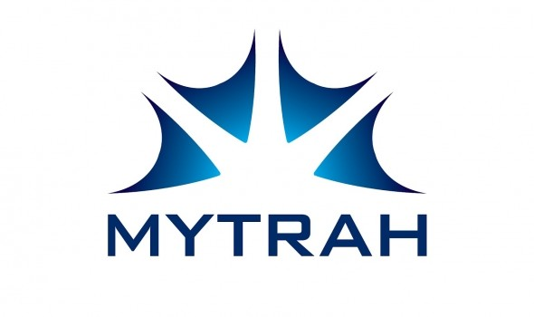

Welcome to 'Mytrah MERRA2/ERA data download portal' Documentation
The GitHub repository for this project can be viewed here.

Features of the app
- Enables the user to download MERRA-2 and ERA data.
- MERRA-2 data is downloaded from the NASA website.
- ERA data is downloaded from the ECMWF public datasets.
- The user can enter his/her desired windmill coordinates.
- Can also enter the time period for which the data needs to be downloaded.
- Can select any/all parameters as desired.
- The data that is downloaded is stored in a database, so similar requests in the future are met with faster.
- The data is computed upon to create an Excel Workbook for user's convenience.
- After download, the respective excel sheet is deleted from the database to save server memory.
Notes of Caution
-
If a particular 'node'(
lat_lon) folder is not present, it is dynamically created along with itsFinalfolder. TheFinalfolder is the one where all the final excel workbooks reside just before being downloaded. So, in the latitude and longitude textboxes present in the interface, DONOT enter incorrect values. This is because their corresponding 'incorrect node and Final folders' are created. -
Currently, no progress bar is shown when the user submits a request by clicking on the SUBMIT button. The user should maintain patience until the alert box appears, informing the user that the file is ready to be downloaded.
-
After the user clicks on the ok button in the alert box, the file download starts. After the file is downloaded into the user's system, the corresponding excel file in the server is deleted. This file is regenerated if the user submits a similar request in the future.